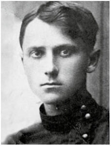

.jpg)
.jpg)
.jpg)
Знайомство з поетом
Найніжнішим ліриком, українським соловейком називають Володимира Сосюру, чиє поетичне слово народжувалося з любові із любов’ю. Володимир Миколайович Сосюра (6 січня 1898, Дебальцеве) — український письменник, поет-лірик, автор понад 40 збірок поезій, широких епічних віршованих полотен (поем), автобіографічного роману «Третя Рота».
Оберіть розділ до якого хочете перейти:
Дитинство та юність
Володимир Сосюра народився у родині бідного службовця. Сам він про це пише так: «Народився я на станції Дебальцеве о десятій годині ранку шостого січня 1898 р. Народився на тиждень раніше. Це було так. Мати на останнім місяці вагітності виходила з вагона, і ії ударив у живіт гострим кутом скрині якийсь пасажир.
Він це зробив ненавмисне. Але мені від того було не легше. Мабуть, він ударив мене в ліву половину голови, і від того я народився передчасно». З цього він розпочав свій автобіографічний роман «Третя рота».

У 1909– 1911 роках працював на содовому заводі міста Верхнього (більш відоме як Третя Рота, нині у складі Лисичанська) в бондарському цеху, телефоністом, чорноробом.
З 1911 до 1918 навчався в двокласному міністерському училищі м. Верхнього, трикласному нижчому сільськогосподарському училищі на станції Яма Північно-Донецької залізниці, бюро Донецького содового заводу (м. Верхнє).
>До лектури його дитячих літ належали Гомер і Шиллер, Гоголь і Шевченко, Пушкін і Леся Українка, І. Франко, М. Нек-расов і Конан Дойль, а разом з ними — А. Бєлий, О. Апухтін, М. Вороний, О. Олесь, С. Надсон. Саме лірика романсового плану як найбільше імпонувала Сосюрі й манила його до перших літературних спроб.
У багатотиражці Донецького содового заводу «Прапор Ілліча» від 27.03.1939 р. була надрукована «Моя автобіографія» на той час вже досить відомого поета Володимира Сосюри. У ній про початок творчого шляху написано: «Вірші почав писати з 14 років. Писав російською і українською мовами. Перші вірші мої були надруковані в 1917 році в лисичанській газеті».
22 жовтня 1917 у лисичанській газеті друкують його перший із відомих нам український вірш «Чи вже не пора...», який був ще досить недосконалий за формою. А в січні 1918 року, коли Сосюра вчився в сільськогосподарській школі при станції Яма Північно-Донецької залізниці, у Бахмуті почав виходити журнал учнівської молоді «Вільні думки».
У ньому надруковано і два вірші поета «Чи вже не пора...» та «Вечір». Усі ці перші вірші поета були підписані рідним прізвищем — Сюсюра.
У 1921 році виходить збірка «Поезії», яка вважається його першою книжкою. Підписана вона вже Володимиром Сосюрою. У травні 1922 році в Харкові починається нове життя – літературне, у якому немає місця ні Сюсюрі, ні Соссюрі.
В роки війни Володимир Сосюра був військовим кореспондентом фронтової газети "За честь Батьківщини" і написав вірш "Любіть Україну".
_Чи.jpg)
У січні 1948 року – до 50-річчя – Сосюру нагородили орденом Леніна. У квітні його відзначили Сталінською премією з грошовою винагородою в розмірі 100 тисяч карбованців за збірку «Щоб сади шуміли». У ній вміщено і вірш «Любіть Україну», написаний ще під час війни, в 1944 році.
Особисте життя
Офіційно Володимир Сосюра був одружений тричі.
Уперше — в 1922 році. Його дружина — Віра Каперівна Берзіна, студентка, як і він сам.
Жили у Харкові. Цій жінці присвятив поему «Робфаківка». Причиною розлучення стали її шовіністичні погляди: "Ми з тобою зійшлися в маю, ще не знав я, що значить ідея.Ти й тоді Україну мою: не любила, сміялася з неї."
Від першого шлюбу в нього було двоє синів — Олег і Микола.
Вдруге Сосюра одружився в 1931 з Марією Гаврилівною Даниловою, з якою познайомився у Сталіно. Вона була на 12 років молодшою, закінчила балетну школу в Києві. 15 січня 1932 року в них народився син Володимир.
У 1949 р. Марію Сосюру заарештували начебто за розголошення державної таємниці і заслали до Казахстану. Через п'ять років вона повертається і з'ясовується, що Володимир взяв третій шлюб. Заради Марії Гаврилівни він розриває попередній шлюб та повертається до неї. Разом вони прожили до кінця життя.
Творчість

Творчість Володимира Миколайовича є однією з найяскравіших, найоригінальніших сторінок в антології української поезії ХХ століття. Її зміст можна визначити як органічне поєднання романтики боротьби та кохання. В центрі уваги внутрішній світ людини, моральне право кожного на страждання і радість, любов і ненависть, минуле і майбутнє. В.Сосюра належить до сучасних класиків в українській поезії, що своїми витоками мали народнопісенні джерела, недарма його називають «солов’єм України». І як би не оцінювали протягом творчого шляху поета його вірші та поеми, для читача він залишатиметься ніжним ліриком, що чарує своєю щирістю і задушевністю.
Віршувати Сосюра міг де завгодно і коли завгодно — умів зосереджуватися й абстрагуватись за будь-яких умов. У романі «Третя рота» він зізнавався: «Поетична лабораторія у мене в голові. Я перекреслюю і виправляю рядки віршів у голові, а не на папері, а коли виливаю образи на папір, то жодних перекреслень і виправлень не буває». Маючи унікальну пам’ять, митець тримав у пам’яті цілі поеми, міг розповідати їх годинами.
Невід’ємною складовою його творчого процесу було саме публічне читання. Друзі пригадували, що, завітавши в гості, він часто навіть не вітався, а прямо з порогу починав виголошувати свої твори — спочатку нові, потім давніші, скільки завгодно довго. А як не було поряд знайомих, розповідав їх випадковим людям — продавчиням, кондукторам, міліціонерам.
Трохи більше про твори українського поета:
- У 1921 році виходить у світ перша збірка В. Сосюри «Поезії».
- У 1922 році з’являється його друга збірка «Червона зима», що принесла авторові широку популярність.
- З 1923 року він частіше і частіше пише великі поетичні твори. Так, після поем «Віра» і «Золотий ведмедик» він пише епопею «Залізниця», що складається з п’яти сюжетно пов’язаних поем.
- У 1928-1929 рр. виходять поеми В. Сосюри «Вчителька», «Поет», «Заводянка», «ДПУ», збірки віршів «Коли зацвітуть акації», «Де шахти на горі» (1926), «Серце» (1931), «Червоні троянди» (1932).
- У 1937 р. Сосюра починає працювати над романом у віршах «Червоногвардієць», який закінчує у 1940 р.
- Останні передвоєнні книги віршів («Журавлі прилетіли», «Крізь вітри і роки», 1940) характеризуються переважанням інтимної та пейзажної лірики, вони сповнені живої, щирої любові до України.
- У 1942 році в Уфі Сосюра пише поему «Син», яку закінчив у 1944 році, видає поетичні збірки «В годину гніву» і «Під гул кривавий».
- У 1947 р. виходить збірка поезій Володимира Сосюри «Щоб сади шуміли».
- У 1950-ті роки пише великі твори:
історико-публіцистичну поему «Україна» (1951)
драматичну мініатюру «Дочка лісника» (1957)
ліро-епічну поему «Біля старої шахти» (1957). - У 1947 р. виходить збірка поезій Володимира Сосюри «Щоб сади шуміли».